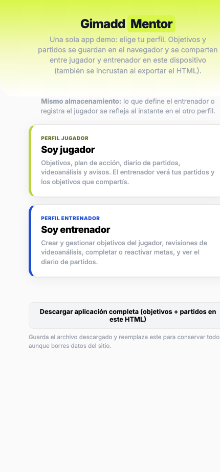
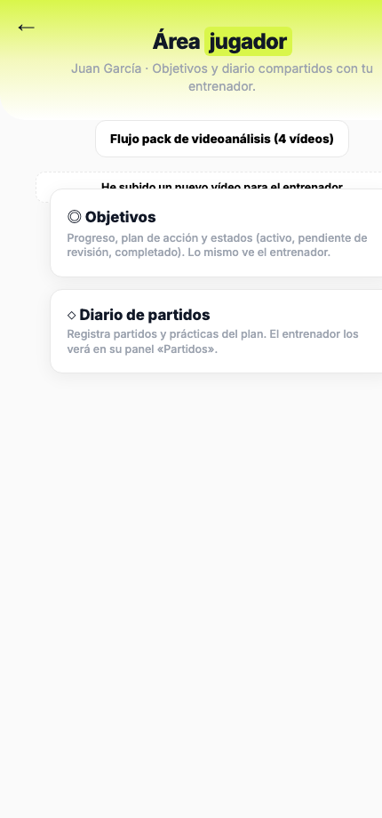
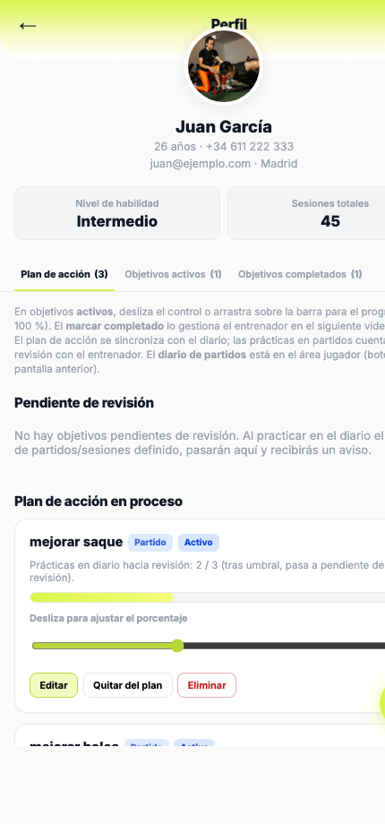
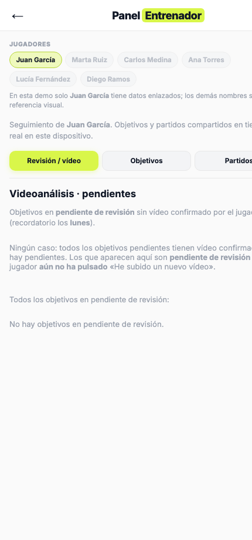
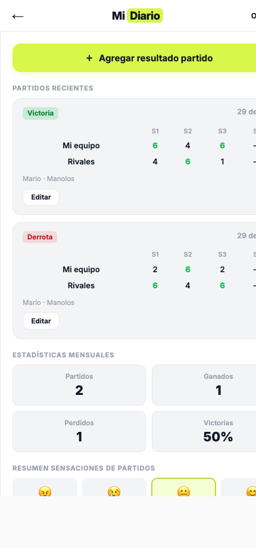

PDF: En Chrome o Edge: Archivo → Imprimir → Guardar como PDF. O ejecutar desde la carpeta dev-handoff: ./generar-pdf.sh
Visión global: una sola página (SPA) con cinco vistas principales, dos almacenes lógicos (objetivos y partidos), sincronización entre pestañas y exportación del HTML con datos incrustados.
La función showView(name) activa la sección con data-view igual a name (clase is-active) y ajusta la clase del body. Para documentación y capturas, el prototipo admite carga inicial con hash: #jugador, #objetivos, #entrenador, #diario (sin hash = inicio).
| Vista | Propósito |
|---|---|
home | Elegir perfil jugador o entrenador; descargar HTML completo con datos actuales. |
jugador | Hub del jugador: flujo videoanálisis, aviso, accesos a objetivos (perfil) y diario de partidos. |
objetivos | Perfil del jugador con pestañas: Plan de acción (pendiente revisión + plan en curso), Activos, Completados. |
entrenador | Panel con tres bloques: Revisión/vídeo, Objetivos (misma taxonomía en subpestañas), Partidos (solo lectura). |
diario | Registro de partidos, estadísticas, formulario de partido con ítems de plan de acción enlazados a objetivos. |





localStorage: clave gimadd_objetivos_v1 (array JSON). Clave de versión embebida: gimadd_objetivos_v1_fileId comparada con gimadd-store-meta.fileId en el HTML: si cambia, se reinicializa desde el JSON embebido gimadd-objetivos-seed (útil al importar un backup).
| Campo | Tipo / valores | Notas |
|---|---|---|
id | string | Identificador estable (p. ej. g-…). |
titulo | string | Texto mostrado en tarjetas. |
estado | activo | pendiente_revision | completado | Drive el split en listas y badges. |
completado | boolean | Derivado coherente con estado. |
enPlanAccion | boolean | Solo sentido si está activo: entra en «plan en proceso». |
tipoObjetivo | clase | partido | Etiqueta UI. |
partidosMeta | number 1–50 | Umbral de sesiones/partidos a practicar en diario antes de pasar a revisión. |
progreso | number 0–100 | Slider / barra jugador y entrenador. |
practicasUmbralOffset | number | Al reactivar un objetivo, se alinea el conteo de prácticas con el histórico. |
jugadorSubioVideoTrasRevision | boolean | Si en revisión el jugador confirmó nuevo vídeo; alimenta dashboard entrenador. |
creadoPor | jugador | entrenador | Copy contextual en tarjeta. |
fechaLimite, fechaCompletado | ISO fecha (string) | Opcionales. |
splitGoalsestado === "pendiente_revision".enPlanAccion verdadero.estado === "completado".Pestaña «Plan de acción» (jugador y coach): muestra en orden las secciones pend + plan; el número entre paréntesis en la pestaña es pend.length + plan.length.
{
"id": "g-1777482161796-7qk73oj",
"titulo": "mejorar saque",
"estado": "activo",
"enPlanAccion": true,
"tipoObjetivo": "partido",
"partidosMeta": 4,
"progreso": 85,
"practicasUmbralOffset": 0,
"jugadorSubioVideoTrasRevision": true,
"creadoPor": "jugador",
"completado": false
}
localStorage: gimadd_partidos_v1, con gimadd_partidos_v1_fileId alineado a gimadd-diario-meta. Array de partidos; cada uno puede incluir planAccion: lista de ítems ligada a objetivos por objetivoId.
{
"objetivoId": "g-1777482161796-7qk73oj",
"titulo": "mejorar saque",
"practicado": true,
"sensaciones": "he metido un montón de puntos de saque"
}
Para cada objetivo activo con plan, se cuenta cuántos partidos tienen al menos un ítem de planAccion con ese objetivoId y practicado: true, restando practicasUmbralOffset. Si el total ≥ partidosMeta, recalcGoalsFromMatches() pasa el objetivo a pendiente_revision, reinicia la bandera de vídeo y guarda.
storage: otras pestañas del mismo origen recargan objetivos o partidos y refrescan UI.gimadd_objetivos_channel y gimadd_partidos_channel: aviso inmediato; en el mismo documento el canal también recibe el mensaje, por eso saveGoals durante render() usa { broadcast: false } para evitar un bucle infinito.refreshAllGoalUI(): bandera central tras cambios: banner inicio, listas jugador, espejo coach, dashboard revisión, tabla partidos coach, sección plan en formulario diario.goalForm.onsubmit crea o actualiza el elemento en el array y llama saveGoals + refreshAllGoalUI.persistMatches + recalcGoalsFromMatches; si se alcanza el umbral, el objetivo pasa a «Pendiente de revisión» y el banner de aviso puede mostrarse en el hub jugador.progreso en caliente.downloadFullApp()Genera un nuevo archivo HTML sustituyendo los bloques JSON incrustados por los datos vivos y nuevos fileId para objetivos y diario, de modo que al abrir el archivo en otro sitio no se mezclen entradas antiguas de localStorage.
| Elemento | Identificador |
|---|---|
| Meta objetivos embebido | #gimadd-store-meta |
| Seed objetivos embebido | #gimadd-objetivos-seed |
| Meta diario embebido | #gimadd-diario-meta |
| Seed partidos embebido | #gimadd-partidos-seed |
| localStorage objetivos | gimadd_objetivos_v1 |
| localStorage partidos | gimadd_partidos_v1 |
Generado para Gimadd Mentor — . Prototipo fuente en la misma carpeta padre: gimadd-mentor-jugador-app.html.